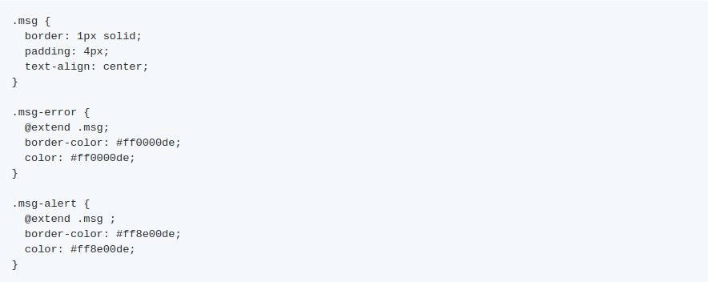
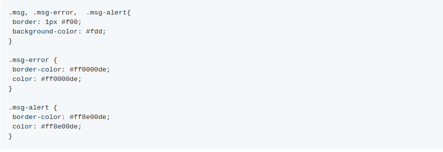
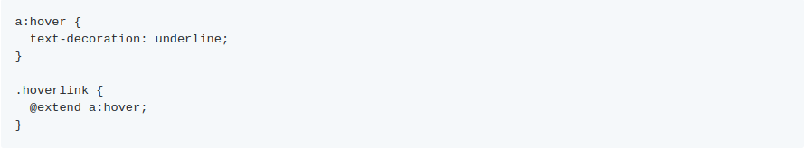
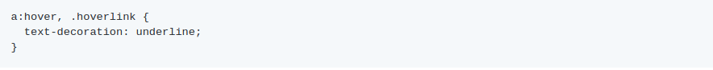

Com a diretiva @extend é possível herdar estilos de outras classes, sua utilização evita a duplicação de estilos no arquivo final.
Alguns exemplos de utilização:
Temos dois tipos de erro que possuem características iguais, porém possuem algumas exceções de cor de acordo com a gravidade do erro. Criamos a classe .msg que receberá as características semelhantes e estendemos a classe .msg nas classes de erro específicas.
Será compilado para:
Também é possível herdar estilos de pseudo-elementos:
Será compilado para:
